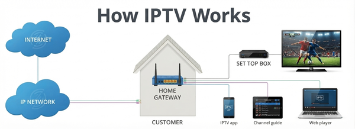
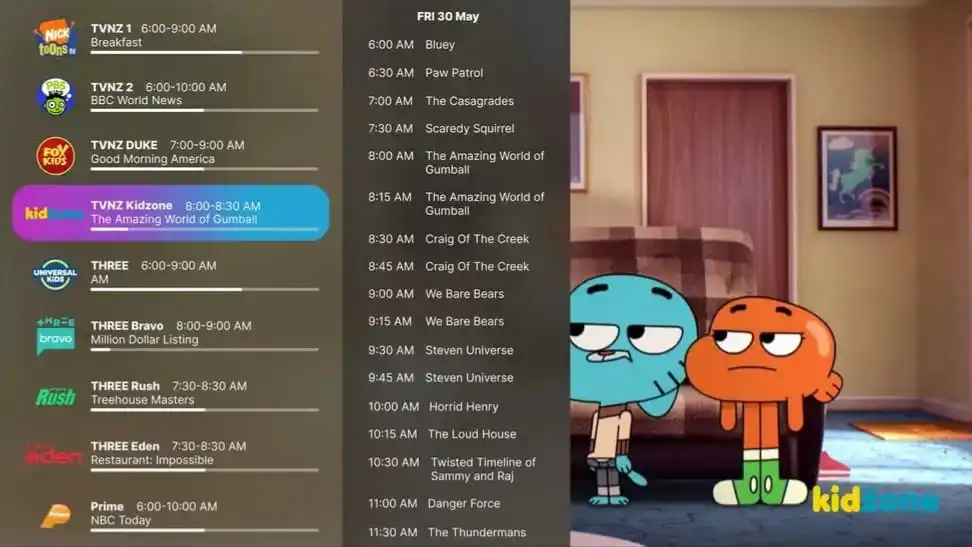

IPTV stands for Internet Protocol Television. It is the delivery of television over the same kind of data network that carries websites, email and video calls, rather than through an aerial, a coaxial cable or a satellite dish. Your device requests a stream, the stream travels to it as data, and a player turns that data back into a picture and sound.
IPTV is a way of delivering video, not a single product. In everyday use the term usually refers to an authorised service you can watch through a compatible player app on a television, streaming stick, phone, tablet or computer.
What is IPTV?
Traditional television has always worked by sending one signal to everybody at once. An aerial picks up broadcast transmissions, a cable connection carries a fixed line-up down a wire, and a satellite dish receives a signal from orbit. Whatever the method, the channel line-up arrives the same way for every viewer.
IPTV is different because it is requested rather than broadcast. Data travels to your device in both directions, so your player can ask for a specific channel or film at the moment you press play. The same connection can carry whichever channel you choose, which is why IPTV is described as an internet-delivered form of television rather than a new kind of broadcast.
IPTV compared with aerial, cable and satellite
- Antenna or aerial: free-to-air signals received over the air. A fixed channel line-up and the picture quality depend on the transmitter and weather.
- Cable: television delivered over a physical cable network. Stable, but usually limited to the coverage area and equipment of that operator.
- Satellite: a dish receives a signal from a satellite. Useful where cable does not reach, but it needs a clear line of sight and installed hardware.
- IPTV: video sent as data over an internet connection. It needs a stable broadband link and a compatible device, but not a dish or aerial on the roof.
None of these methods is automatically better. Each one trades coverage, hardware and quality differently, and what you actually notice depends on your connection, your device and the service behind it.

What do you need for IPTV?
Setting IPTV up is quicker when you know which pieces you are assembling. In practice there are four, plus a couple of optional extras that improve the experience.
- A reliable internet connection. Consistency matters more than a headline speed figure. A connection that holds steady through a whole match will serve you better than a faster one that drops.
- A compatible device. A Smart TV, Android TV or Google TV device, Fire TV device, phone, tablet or computer can all work, depending on the apps available for that platform.
- An IPTV player application. The app that displays the streams, handles playback and usually organises channels and films into categories.
- Authorised access to a service or account. The content itself comes from a service you are entitled to use. Setup begins after that, not instead of it.
- Login details or a playlist, where the service uses them. Some services issue a username, password and server address; others supply a playlist link instead, or activate the device directly.
- EPG data, where it is not supplied automatically. Programme information makes a channel list far easier to browse, and many players load it on their own.
If any of those pieces are missing, it is usually the last two that people are unsure about. The sections below explain the player, the playlist and the guide in more detail.
How does IPTV work?
Behind the app the process is straightforward. Four steps are enough to describe it.
1. Content is prepared for streaming
A service receives, stores or repackages video and encodes it into a format that can be sent over the internet in small pieces rather than as one enormous file.
2. Your device connects through the internet
Your television, streaming stick, phone or computer is already online, either through Wi-Fi or a wired Ethernet connection. That connection is the route the video data travels along.
3. The IPTV player connects to the service
The player uses your login details, playlist or portal address to ask the service what is available, then downloads the channel list, the on-demand library and the programme guide.
4. You select a channel or programme
When you press play, the player requests that specific stream and starts decoding it to your screen. Change channel or episode and the player simply requests something else over the same connection.
- Content is prepared and encoded for streaming.
- The device connects to the internet.
- The IPTV player connects to the service and loads its lists.
- The user selects a channel or programme and it plays.
IPTV service vs IPTV player
These two terms are often used as if they were the same thing, which is where a lot of setup confusion starts. They describe different parts of the system, and keeping them apart makes problems much easier to diagnose.
- IPTV is the delivery technology: sending television over an IP network.
- An IPTV service provides the content and the access to it. This is what has the channels, films and series, and what accounts and permissions belong to.
- An IPTV player is the application you install. It does not supply content itself; it displays whatever the service makes available and organises it into a usable interface.
A useful comparison is email. The technology is the same for everyone, the account provides your mailbox, and the app on your phone is just the way you read it. Swapping the app changes how things look, not what you have access to. The same is true of IPTV: changing player usually changes the interface, not your account.

What is an IPTV playlist?
A playlist is simply a list that tells a player where to find channels and on-demand titles. Instead of typing in hundreds of addresses by hand, the player reads the list and builds its channel categories and library from it.
What does M3U mean?
M3U is the name of a common playlist file format. An M3U file is a plain text list of stream
addresses, and you will see the extension in filenames such as playlist.m3u or
playlist.m3u8. It is worth remembering that M3U is only a container format, like a shopping list -
it does not contain video itself and it says nothing about whether you have the right to watch what it points
to.
Playlists are not the only method
Many services never ask you to enter a playlist by hand. Depending on the player and the service, you may be asked for a username, a password and a server address, a portal or MAC address, or an activation code instead. Some players can also import a configuration supplied by the service. Which method applies is determined by the service you are authorised to use, so follow its own instructions rather than guessing values or borrowing addresses from forums and video descriptions.
What is an EPG?
EPG stands for Electronic Programme Guide. It is the on-screen schedule that a player displays next to each channel, and it is the closest thing IPTV has to a traditional television guide.
A well-populated EPG can show:
- the programme currently on air;
- upcoming programmes on the same channel;
- start and finish times, so you can plan ahead;
- channel names and numbers, grouped into categories;
- short descriptions of each programme where the service provides them.
Many services deliver EPG data automatically when your player loads, and some players let you attach a guide address manually if it is missing. A guide that is empty, incomplete or shifted by an hour is usually an EPG data issue rather than a streaming problem, and it is reasonable to raise it with the service you use.

What is VOD?
VOD stands for Video on Demand. It describes any content you start yourself rather than joining when it happens to be on air: films, series, documentaries, recorded events and catch-up programmes.
The difference from live television comes down to who decides the timing:
- Live TV follows a schedule. You choose a channel and watch what is being broadcast at that moment.
- VOD follows your schedule. You choose a title from an available library and watch it from the beginning, pausing and resuming as you like.
Most players keep the two separate under headings such as Live TV, Movies and Series. Whether VOD is included depends on your service, so treat a large on-demand library as a feature to check rather than an assumption.
Which devices support IPTV?
IPTV runs on the same devices people already use for streaming, but "supports IPTV" only ever means that a suitable player exists for that platform. The categories below are common, and compatibility varies between models and applications.
Televisions and streaming devices
- Smart TVs from the major brands, where a compatible player is available for that TV platform and store, and the model is recent enough to keep up.
- Android TV and Google TV devices, which include many televisions, TV boxes and sticks and have the widest range of player apps.
- Amazon Fire TV devices, including Fire TV Sticks, where you install a compatible player and sign in with your service details.
Mobile devices and computers
- Android phones and tablets, and iPhone and iPad, both of which can run players and can usually cast or mirror to a television.
- Windows and macOS computers, useful for testing a connection or watching on a monitor.
On any of these, the exact experience depends on the application and the service. A player available for one platform is not automatically available for another, and an older device may struggle with higher resolutions even when the app installs. Check that a player exists for your device and that your service authorises it before assuming a setup will work.
What affects streaming quality?
Video quality is the result of several things working together. When it drops, the cause is often somewhere other than the one setting people reach for first.
- Connection stability. A steady link matters more than a high number on a speed test. Short dropouts interrupt a stream even when the average is excellent.
- Wi-Fi signal. Walls, floors and distance from the router all weaken the signal, and a 5 GHz band carries more data but travels a shorter distance than 2.4 GHz.
- Distance from the router. The further a device sits from the router, the more the signal has to travel - moving a stick, box or television a few metres often helps more than a settings change.
- Network congestion. Other household activity such as downloads, game updates, cloud backups and video calls competes for the same connection.
- Device performance. Older televisions and sticks have less memory and slower processors, so they decode high-resolution video less comfortably than a current model.
- Video resolution. A 4K stream carries far more data than a standard-definition one, so the same connection can play one smoothly and struggle with the other.
- Provider infrastructure. How well the service is built, how much demand it carries at peak times and how it routes traffic all affect the stream before it reaches you.
Because these factors combine, no particular internet speed guarantees perfect streaming. A sensible approach is to give the connection the best chance you reasonably can, and to judge quality over a full evening rather than a single moment.
How to reduce buffering
Buffering means the player has run out of video to show while it waits for more data. It is a symptom, not a diagnosis, so it pays to work through the possibilities in order - starting with the free, reversible steps.
- Check the Wi-Fi signal. If bars are low or the device sits far from the router, move it closer and test again.
- Restart the router. Unplug it for about thirty seconds, reconnect and let the network come back up. Many temporary problems end here.
- Restart the device. Fully power the television, stick or phone down rather than just closing the app. This clears memory that the player has been holding.
- Reduce network congestion. Pause large downloads and updates, and check what else is using the connection while you watch.
- Test another channel. If only one channel buffers, the issue is likely that stream. If every channel buffers, look at the connection or the service.
- Use Ethernet where practical. A wired connection to a television or box removes Wi-Fi variables from the equation, and can be run through powerline adapters if the router is far away.
- Lower the stream quality. Many players offer a resolution setting. Choosing a lower one reduces how much data is needed and often stops buffering completely.
- Check whether it affects one stream or everything. A single stream points at that stream; everything at once points at your network or at the service.
- Check the service status. A maintenance window or an outage at the service affects every user, and only the service can confirm or fix it.
- Keep the player updated. Player and firmware updates regularly include playback fixes and new codec support.
If nothing changes after a steady wired connection, current software and another channel, the remaining explanations are usually on the service side. Reporting it with details - the channel, the time and what you already tried - gets a much faster answer than "it keeps freezing".
Is IPTV legal?
This is worth answering plainly, because the word is often used as if it described a single product.
IPTV is a delivery technology. Sending video over an IP network is completely ordinary and is how streaming services, broadcasters' own apps, video platforms, schools and businesses all operate. The technology itself is not the issue.
What matters is the content and the rights behind it. Whether watching a particular channel, film or event through a particular service is lawful depends on whether that service holds the appropriate rights and whether you are authorised to access the content. The same is true of any medium: a device or an app is neutral, while the content and the permission to use it are not.
The practical guidance is straightforward:
- Use services you are authorised to use and that provide the content lawfully.
- Follow the laws that apply where you live, along with the terms you agreed to when you signed up.
- Be sceptical of offers that are dramatically cheaper than the market or that promise everything for almost nothing.
This guide is general information rather than legal advice. If you are unsure about a specific service or your own circumstances, check with the service directly or take qualified local advice.
IPTV terminology
These are the terms you are most likely to meet while choosing a device or a player.
| Term | What it means |
|---|---|
| IPTV | Internet Protocol Television - television delivered as data over an IP network instead of an aerial, cable or satellite signal. |
| IPTV service | The provider side that supplies authorised content and controls access to it through an account or subscription. |
| IPTV player | The application installed on your device that displays streams and organises channels, films and guide data. |
| Playlist | A list of stream addresses that a player reads to build its channels and library. |
| M3U | A common playlist file format, usually seen as .m3u or .m3u8. It is a
container for addresses, not the video itself. |
| EPG | Electronic Programme Guide - the on-screen schedule showing current and upcoming programmes, times and descriptions. |
| VOD | Video on Demand - films, series and recordings you start from a library whenever you choose, rather than joining at a scheduled time. |
| Live TV | Channels streamed according to a broadcast schedule, so you watch each one as it airs. |
Frequently asked questions
Do I need a satellite dish for IPTV?
No. IPTV is delivered over an internet connection, so there is no dish, coaxial cable or rooftop aerial involved. What you do need is a stable broadband connection and a compatible device running an IPTV player.
Can I watch IPTV on my phone?
Yes, when a player is available for your phone's platform and the service you use authorises mobile access. Android phones and tablets, iPhones and iPads can all run IPTV players, and you can usually cast or mirror to a television from the same device.
Does IPTV require fast internet?
It needs a stable connection more than a spectacular one. Higher resolutions carry more data, so 4K asks more of your connection than standard definition, but consistency, low congestion and good Wi-Fi reach matter more than a headline speed figure. No specific speed guarantees perfect streaming.
What is the difference between live TV and VOD?
Live TV follows a schedule, so you choose a channel and watch what is being broadcast at that moment. VOD, or video on demand, is a library you choose from: you start a film or episode when you want and watch it from the beginning.
Why does IPTV sometimes buffer?
Buffering usually means the player ran out of video while waiting for more data. Common causes include a weak or congested connection, an overloaded Wi-Fi network, limited device performance, a high resolution for your connection, or heavy demand on the service at busy times.
Can IPTV be used on multiple devices?
A player can be installed on more than one device, but how many can watch at the same time depends on the service and on the terms of your own account. Simultaneous streams are usually the limit that applies, not the number of devices.
What is an IPTV player?
It is the app that displays the streams. The player provides the interface, the channel categories, the playback controls and often the programme guide, and it connects to the service using the login, playlist or portal details that the service provides. It does not supply content on its own.
What is an EPG?
An EPG, or electronic programme guide, is the on-screen schedule next to each channel. It shows what is on now and next, start and end times, channel information and, where available, short programme descriptions.
Ready to set up IPTV?
Once you know which service you are authorised to use and which device you will watch on, the setup itself is short. Pick the guide that matches your screen and follow it from the top. If you are still deciding, the live TV channels, sports and movies and series pages show what is covered, and the plans list what each option includes.
Still unsure, or have a question about a specific device? Contact us and we will point you to the right guide.